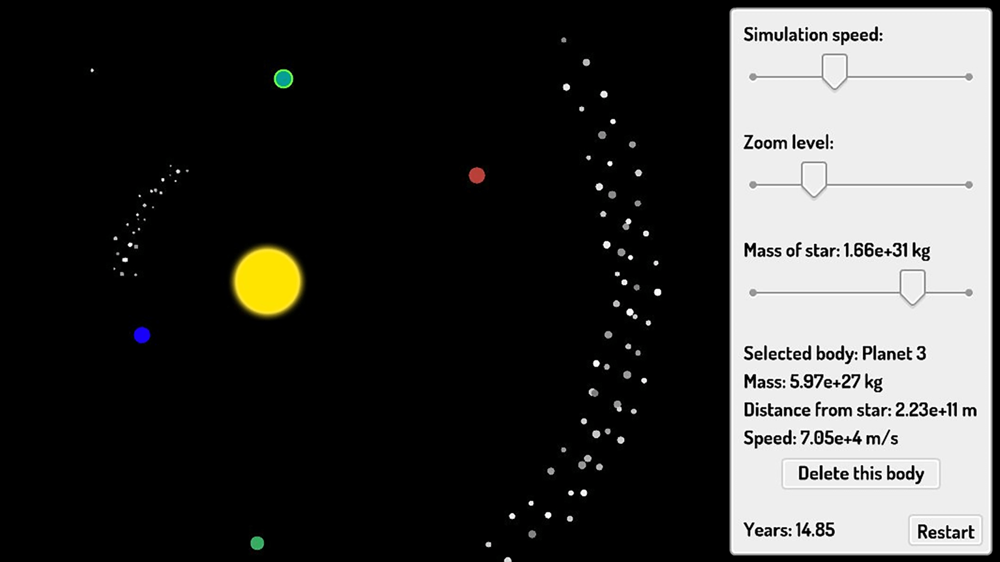

Designing a Solar System
Grades 6-8, 60min
Designing a Solar System is an activity that allows students to explore the dynamics of a fully-customizable set of celestial bodies. Starting with just a star and a planet in stable orbit, students can add planets, asteroids and meteors at varying distances and watch to see how each body’s orbit is affected. Students can freely play with this simulation, or can follow along with a worksheet to create specific solar system configurations.
Topics addressed
- Gravitation
- The interaction between stars, planets, asteroids and meteors in orbit
- Primary CT concept: pattern recognition. Students experiment with different combinations of planets, asteroids and stars in an attempt to find stable orbits for each.
Students will be able to
- Explain how adding various celestial bodies affects the orbit of specific planets
- Understand how solar systems are determined by interactions between all celestial bodies, not just the star and each planet
Materials
- Solar Systems web app
-
Student handout:


Suggested lesson breakdown
This lesson is incredibly flexible – with the provided worksheet, students can work through it and have some free time to explore other scenarios in about an hour, but you should feel empowered to create challenges on your own as well that align with the learning objectives you’re targeting. You could also structure this lesson as a competition – ie, who can create a stable system with the most planets?
Next Generation science standards
-
NGSS.MS-ESS1-2
Develop and use a model to describe the role of gravity in the motions within galaxies and the solar system.